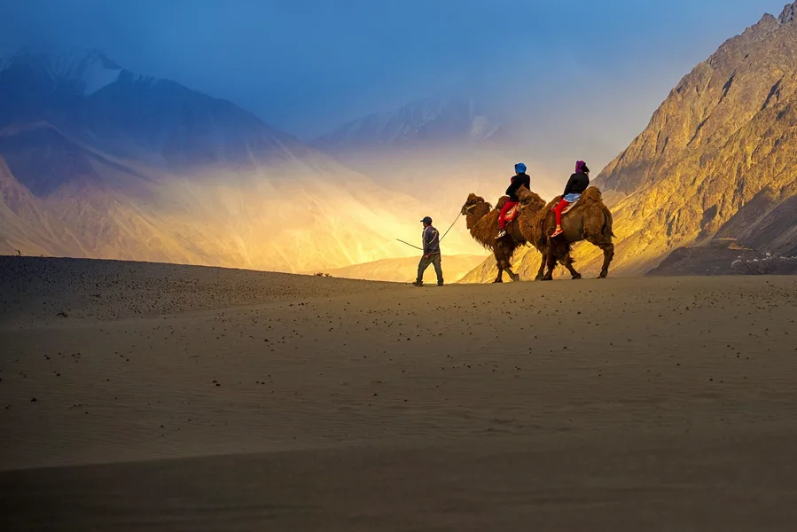
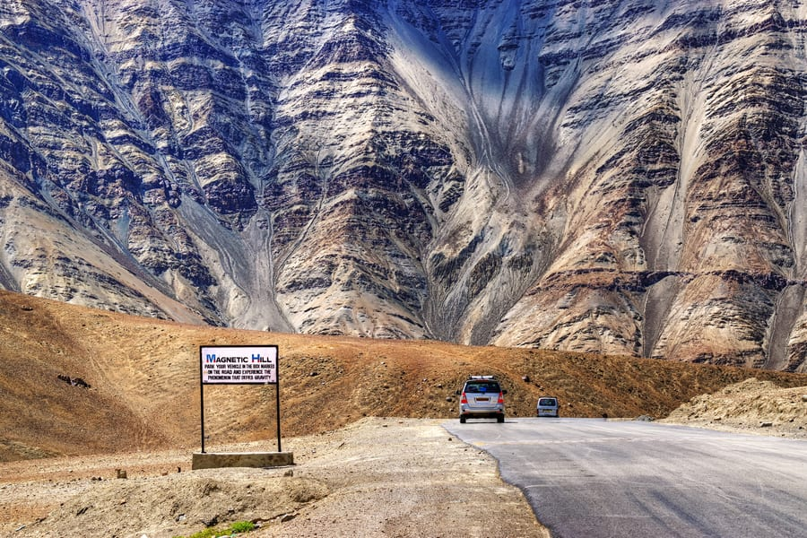
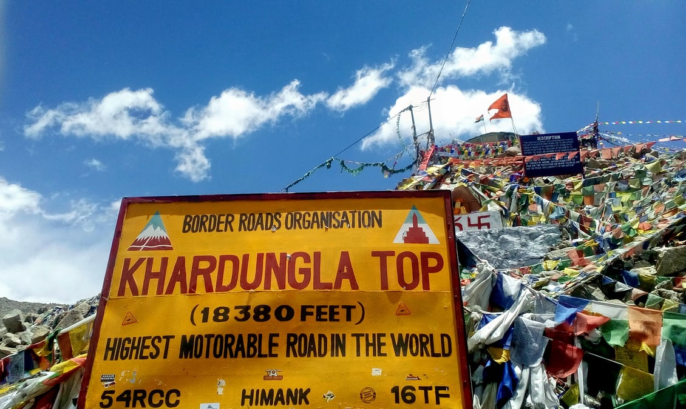

LEH
LEH
LAND OF LAMAS
Located in the Ladakh region of Jammu and Kashmir, Leh is known for its stunning scenic locales, Buddhist temples and pristine environment. Due to the strong influence of Tibetan Buddhism, Leh is also known as Little Tibet or the Land of Lamas. Barren mountain s with brightly painted gompas (or monasteries), fluttering prayer flags, rocky ridges, tiny settlements and the Indus River add to the overall charm of the region.
CENTER OF ATTRACTIONS
-

PANGONG LAKE
The Pangong Lake or the Pangong Tso is one of the highest altitude lakes in the world and is famed for its colour changing water, from blue to red and green. From camping to lakeside bonfire, a wide variety of activities can be enjoyed here. During the winter months, the lake can be seen completely frozen, which is a delightful sight in itself.
-

NUBRA VALLEY
Nubra valley, also known as Dumra is one of the most famous and most beautiful destinations in Leh, Ladakh. From hot springs to river streams and from age-old monasteries to remote villages, Nubra Valley has everything which an explorer seeks. Being a high altitude destination, the valley has many double humped camels, riding which can be a delight.
-

MAGNETIC HILL
The famous Magnetic Hill of Ladakh is a cyclops hill, a place where vehicles seem to have defied the force of gravity and move upwards when parked at a particular marked location here. Located on the Leh-Kargil-Baltic National Highway, this place remains a mystery even today , as many tourists are awestruck to witness the magical experience.
-

KHARDUNGA LA
Gateway to the Shyok and Nubra Valley, the Khardungla Pass is strategically a very important landmass for the country. Famous for being the highest motorable pass with an elevation of 5359 metres, the pass is a favourite spot among the bike riders and adventure lovers. The pass has mighty mountains on both of its sides, which further offer the most dramatic views one can imagine.